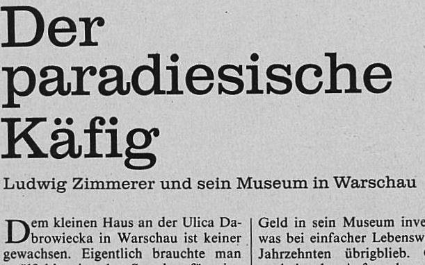

«Ich sagte zu Baur, dass die Seele vielleicht jenem kleinen Haus an der Ulica Dabrowiecka zu Warschau gleiche, das eine Sammlung von ungefähr siebentausend Bildwerken umfasse, die von Ludwig Zimmerer, dem Hausherrn, als paradiesischer Käfig deklariert werde.»
Quelle: Gerhard Meier. Toteninsel. Erste Auflage. Suhrkamp Verlag: Frankfurt am Main. 2007.
Charakteristisch für Meiers Anführung von Exzerpten aus publizistischen Texten ist, dass sie, bis auf wenige Ausnahmen, immer vom Erzähler Bindschädler als Aussprüche an seinen Freund Baur gerichtet sind. Er nimmt stets Bezug auf auf das unmittelbar vorher von Baur Gesagte - der Kontext hier ist, dass Baur ein Bild schildert, dass an der Westwand seiner Seelengalerie zu hängen gekommen sei. Bindschädler führt den Vergleich an, dass Baurs Seelengalerie vielleicht dem „kleinen Haus an der Ulica Dabrowiecka“ gleiche.
Typisch für die Einleitung in einen Zeitungsartikel, aus dem mehrere Passagen zitiert werden, ist dass Meier in der Zusammenstellung der Einleitung freier verfährt, um dem Leser einen gerafften Überblick über die Thematik des Artikels zu bieten.
So wird hier der Anfang des Artikels zwar nahezu wortwörtlich anzitiert, dann aber auch der Titel und den Umfang der Sammlung gleich mit einbezogen.
Abgesehen von der freien Wahl des Verbs „deklariert“ belässt Meier die Begrifflichkeiten des originalen Zitats, die Ersetzungen von „dem kleinen Haus“ zu „jenem kleinen Haus“ und von „in Warschau“ zu „zu Warschau“ dürften als stilistische Anpassungen an Meiers Sprache im Roman gewertet werden. Des Weiteren wird die „rund siebentausend Bilder und Plastiken“ zu „ungefähr siebentausend Bildwerken“ umformuliert, hier zeigt sich Meiers Vorliebe für leicht archaischen Wortschatz, der sich als Konstante durch seine Romane zieht, so aber auch im Artikel an anderer Stelle verwendet wird.